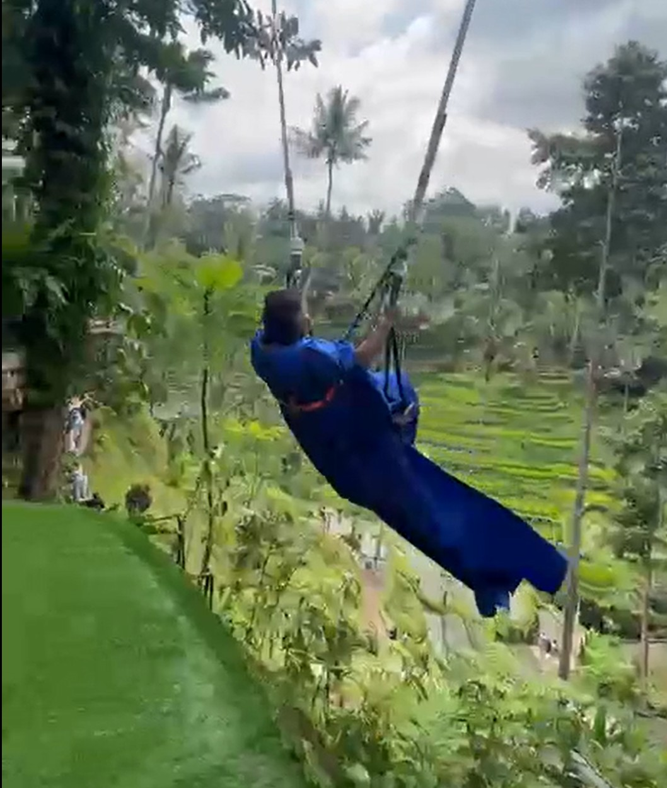

BALI DIARIES
A few moments I wish to etch in my memory 🙂
If this is what Monday blues look like… I need them every day 🙂

That blue dress… yeah, I’m still not over it 🙂
It’s not just a smile… it’s the way you completely slay without even trying 😌
And that smile… makes it even harder 😌
Up there… and somehow still the most beautiful thing in the view 🙂
I thought it would be the view that stays… but somehow, it’s you 🙂
I was genuinely hoping that swing might somehow bring you near to me 😏

Somewhere between the sky and the land… an angel, effortlessly 🙂
Why your cute smile puts me in a trance 🙂

This one… felt like a moment worth keeping 🙂
Some moments don’t need anything extra… they’re already perfect 🙂
Maybe it wasn’t the place…
maybe it was always you 💖
maybe it was always you 💖
And maybe… that’s exactly what made it all special 🙂